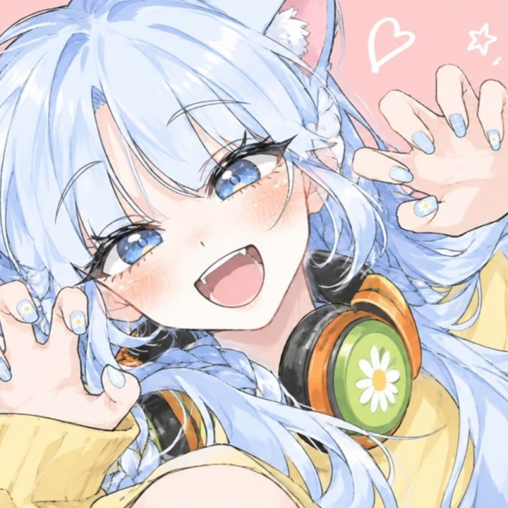
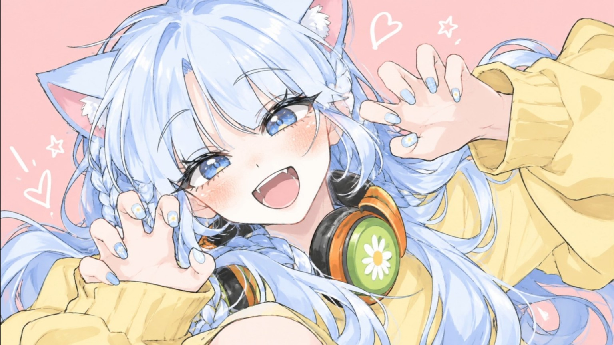
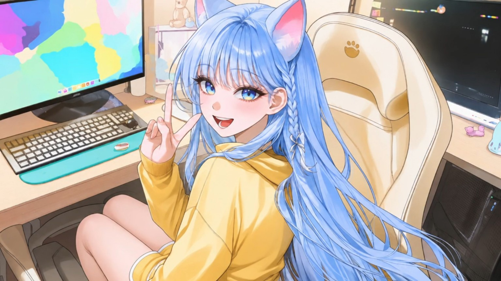
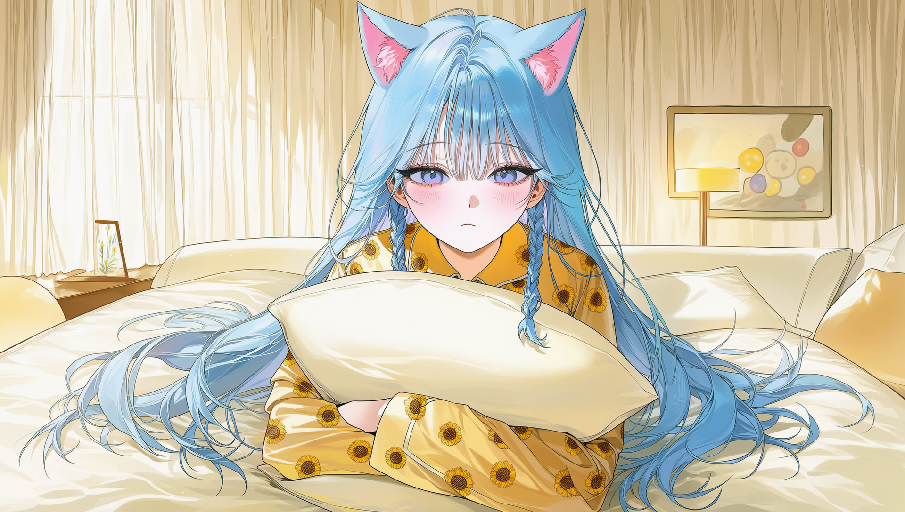

뭐해음

뭐해음
뭐해음은 2026년 10월 21일부터 치지직에서 방송을 시작한 스트리머이다. 토크와 게임을 중심으로 활동하며, 팬 커뮤니티와 SNS를 통해 방송 일정 및 소식을 알리고 있다.
초기 활동에서는 일러스트 기반의 방송 화면을 사용했으며, 기존 캐릭터의 분위기를 살린 3D 버추얼 모델 제작과 정식 데뷔 방송을 준비하고 있는 것으로 알려져 있다.
1. 개요
뭐해음은 2026년 10월 21일 치지직에서 첫 방송을 진행한 스트리머다. 확인된 초기 자료에서는 토크와 게임을 중심으로 방송을 진행하고, 시청자 참여형 코너와 일상·근황 이야기를 함께 다루는 모습이 나타난다.
방송 활동과 함께 X 계정 및 네이버 팬카페를 운영하고 있다. 각 채널은 동일한 내용을 반복하기보다 방송 진행, 짧은 홍보·근황 전달, 일정 및 커뮤니티 공지 등으로 역할이 나뉘어 활용되는 양상이다.
2. 방송 스타일과 콘텐츠
2.1 토크 중심 진행
공유된 방송 기록과 일정 공지에서 토크·이야기 콘텐츠가 반복적으로 확인된다. 방송은 시청자와 대화하며 진행하는 형태가 중심이며, 차분하고 라디오 방송을 연상시키는 분위기라는 인상이 관찰되었다. 이 부분은 자료를 공유한 사용자의 시청 감상에 해당한다.
2.2 게임 및 참여형 콘텐츠
게임 방송과 시청자 참여 콘텐츠도 편성되었다. 2026년 11월 12일 일정에는 사과 게임과 테트리스 시청자 참여가 안내되었고, 11월 11일에는 시청자 사연을 받아 함께 살펴보는 ‘그린라이트 판독소’가 진행되었다.
2.3 목소리와 말투
사용자는 목소리와 말투를 채널을 팔로우하게 된 주요 계기로 꼽았다. 방송인의 공개 게시물에는 경상도 여러 지역, 제주도, 함경도 말투가 섞여 있다는 취지의 자기소개가 공유되었다. 이는 방송인이 표현한 말투의 특징에 관한 내용이며, 출신 지역이나 성장 배경을 뜻한다고 단정할 수 없다.
3. 초기 활동 현황
| 첫 방송 | 2026년 10월 21일 |
|---|---|
| 치지직 팔로워 | 127명 (2026년 11월 14일 확인 화면) |
| X 계정 | 게시물 64개 · 팔로워 212명 · 팔로잉 49명 (같은 날 확인 화면) |
| 방송 기록 | Softcon 화면을 바탕으로 22개 세션 정리 |
| 누적 방송 시간 | 정리된 세션 기준 약 63.7시간. 11월 14일 진행 중 세션 포함 |
| 팬덤명 | 토토단 (2026년 11월 10일 공식 발표 확인) |
위 수치는 사용자가 공유한 각 화면의 캡처 시점에 따른 기록이다. 특히 치지직 프로필에 표시된 누적 방송 시간 60시간과 세션별 기록을 합산한 약 63.7시간은 수집 시점 및 집계 범위가 다를 수 있으므로 하나의 값으로 합치지 않는다.
4. 하위 문서
방송 활동
뭐해음의 초기 방송은 토크를 중심으로 게임, 시청자 참여형 코너, 해외 체류 중의 야외·반캠 방송 등으로 구성되어 있다. 10월 말에는 해외 체류와 이동 일정이 방송 시간에 영향을 준 것으로 보이며, 11월 초부터는 저녁 시간대 정규 편성이 비교적 자주 확인된다.
1. 방송 콘텐츠 구성
1.1 토크·근황 이야기
초기 방송 일정에서 토크는 반복적으로 등장하는 기본 콘텐츠다. 11월 2일에는 주간 회고와 ‘이모저모’가 안내되었고, 11월 10일에는 토크 중심 방송과 목 상태에 따른 랩·노래 콘텐츠 가능성이 공지되었다. 11월 11일에도 토크와 시청자 사연형 코너가 편성되었다.
1.2 게임 및 시청자 참여
11월 3일 일정에는 토크와 게임이 함께 안내되었다. 11월 12일에는 사과 게임과 테트리스 시청자 참여가 공지되어, 스트리머 단독 진행뿐 아니라 시청자가 방송에 직접 참여하는 형식도 시도한 것으로 확인된다.
1.3 사연형·이벤트 콘텐츠
11월 11일에는 ‘그린라이트 판독소’ 또는 ‘그린라이트 연애재판’으로 소개된 시청자 사연 참여 콘텐츠가 진행되었다. 사연을 접수하고 선정 결과를 공지하는 흐름이 확인되어, 방송 전후로 팬카페를 콘텐츠 참여 창구로 활용한 사례다.
1.4 야외·반캠 방송
10월 26일에는 야외 또는 반캠 형태의 방송 관련 기록과 후기가 공유되었다. 이후 베트남 체류 중에도 카페·야외 공간에서 방송하는 일정이 안내되었다. 해외 환경에서의 방송은 일반적인 실내 토크 방송과 다른 현장 변수가 있었을 수 있으나, 구체적인 기술 문제나 현장 상황은 공유된 기록에 나타난 범위에서만 다룬다.
2. 진행 스타일
현재까지 공유된 자료에서 가장 뚜렷한 축은 토크 중심 진행이다. 여기에 게임과 시청자 참여 콘텐츠를 섞어 방송 주제를 바꾸는 형태가 확인된다. 사용자는 방송 분위기를 차분한 라디오형 토크에 가깝다고 느꼈으며, 목소리와 말투를 채널을 팔로우한 주요 계기로 언급했다. 이는 사용자의 시청 감상이며 전체 시청자의 공통 평가를 뜻하지 않는다.
일정 공지에서는 방송의 세부 주제와 시작 시각을 미리 안내하고, 휴방 사유나 콘텐츠 변경 가능성도 함께 전달하는 방식이 관찰된다. 예를 들어 11월 10일에는 목 상태에 따라 랩·노래 대신 토크로 진행할 수 있다고 공지했다.
3. 방송 일정과 실제 기록
아래는 팬카페 공지에 안내된 예정 시각과 Softcon 기록에서 확인된 실제 시작 시각을 비교한 사례다. 실제 시작 시각은 KST 기준이다.
| 날짜 | 공지된 일정 | 기록상 실제 시작 | 비고 |
|---|---|---|---|
| 10/26 | 모바일 테스트 방송, 약 23:00 예정 | 23:05 및 23:26 세션 | 두 개의 짧은 세션으로 기록 |
| 10/27 | 업무 일정에 따라 22:00~22:30 전후 예상 | 22:36, 23:22 세션 | 예상보다 늦은 시작 기록 |
| 10/29 | 베트남 현지 21:00, KST 23:00 예정 | 23:03 | 공지 시각과 근접 |
| 11/02 | 23:59 주간 회고 | 23:59 | 공지 시각과 일치 |
| 11/03 | 20:00 토크·게임 | 20:03 | 공지 시각과 근접 |
| 11/05 | 23:30 방송 | 23:35 | 공지 시각과 근접 |
| 11/08 | 20:00 방송 | 20:02 | 공지 시각과 근접 |
| 11/10 | 20:30 토크 | 20:32 | 공지 시각과 근접 |
| 11/11 | 20:00 토크·참여형 콘텐츠 | 20:18 | 18분 차이 |
| 11/12 | 20:00 토크·게임 | 20:02 | 공지 시각과 근접 |
| 11/14 | 15:00 첫 주간 방송 예정 | 15:02 | 낮 시간대 방송 기록 |
10월 26~27일 일부 날짜는 여러 세션이 이어져 기록되어 있다. 표는 세션을 임의로 하나로 합치지 않고 주요 시작 시각을 함께 표시했다.
4. 시간대 및 편성 패턴
4.1 초기: 시작 시간이 일정하지 않은 시기
10월 21일과 22일에는 각각 21시대와 20시대에 방송을 시작했다. 10월 24일과 25일에는 새벽 2시대 시작 기록이 나타나며, 10월 26~29일에는 심야 시간대 방송과 자정을 넘기는 세션이 다수 확인된다. 초기에는 일정과 외부 활동에 따라 방송 시작 시간이 다양했던 것으로 정리할 수 있다.
4.2 11월 초: 저녁 시간대 편성 증가
11월 3일, 8일, 10일, 11일, 12일 방송은 20시 전후 시작으로 기록되었다. 11월 2일과 5일은 23시대 시작이어서 모든 방송이 저녁 초반으로 고정된 것은 아니지만, 주간 공지에서 20시 전후 편성이 반복적으로 나타난 점은 확인된다.
4.3 방송 종료 시각
11월 초 방송 중 일부는 자정을 넘어 새벽까지 이어졌다. 예를 들어 11월 3일 방송은 01:42, 11월 8일은 02:30, 11월 10일은 01:12, 11월 11일은 01:30에 종료된 것으로 기록되어 있다. 따라서 시작 시각이 20시 전후라고 해서 방송이 짧게 끝나는 패턴이라고 볼 수는 없다.
4.4 낮 방송 시도
11월 14일에는 15시 방송이 공지되었고, 기록상 15:02에 시작했다. 이는 공유된 기간 중 확인되는 주간 시간대 방송 사례다. 이후에도 낮 방송이 정기적으로 이어질지는 현재 자료만으로 판단할 수 없다.
5. 해외 체류 기간 방송
10월 28일 팬카페 게시물에는 호찌민에서 하노이로 이동한다는 내용이 공유되었고, 10월 29일에는 베트남 현지 21시 방송 일정이 안내되었다. 베트남은 한국보다 2시간 느리므로 현지 21시는 KST 23시에 해당하며, 실제 기록된 10월 29일 23:03 시작과 맞아떨어진다.
10월 26~28일 방송 기록 일부도 KST 기준 심야·새벽 시간대에 분포한다. 이 기간에는 현지 체류와 이동 일정이 함께 공지되어 있으나, 방송 시간 변화의 원인을 해외 체류 하나로 단정할 수는 없다. 여행 또는 업무 방문의 구체적인 목적도 제공된 공지만으로 확정되지 않는다.
6. 종합 정리
- 핵심 콘텐츠: 토크를 중심으로 게임, 사연형 코너, 시청자 참여 콘텐츠가 더해진다.
- 초기 편성: 10월에는 저녁·심야·새벽 시작이 혼재했다.
- 11월 편성: 20시 전후 시작이 여러 차례 반복되었지만 23시대 방송도 유지되었다.
- 방송 길이: 일부 방송은 자정을 넘어 새벽까지 이어졌다.
- 특이 사례: 해외 체류 중 야외·반캠 시도와 11월 14일 낮 방송이 확인된다.
- 향후 확인점: 저녁 시간대 편성이 계속 유지되는지, 낮 방송이 반복되는지, 시청자 참여형 콘텐츠가 정기 코너로 자리 잡는지 관찰할 수 있다.
방송 통계
이 문서는 사용자가 제공한 Softcon 화면에서 확인한 방송 세션을 바탕으로 작성했다. 개별 방송의 시간, 최고·평균 시청자, 채팅 수를 정리하고 기록 범위 안에서 확인할 수 있는 특징을 분석한다.
1. 핵심 지표
세션 평균 최고 시청자 13.1명은 22개 세션의 ‘최고 시청자’ 숫자를 단순 평균한 값이며, 방송 시간으로 가중한 평균이나 채널의 평균 동시 시청자를 의미하지 않는다.
2. 세션별 최고 시청자
아래 막대는 각 세션에서 기록된 최고 시청자 수를 비교한다. 막대의 최댓값은 이 기록에서 확인된 20명이다.
최고 기록은 11월 3일 20명이다. 다음으로 10월 28일 03:36 세션과 11월 8일 세션에서 각각 19명이 기록되었다.
3. 세션별 평균 시청자
평균 시청자 기록은 세션별로 4~15명 범위에 분포한다. 아래 비교 역시 세션 단위의 원자료를 그대로 표시한 것이다.
가장 높은 평균 시청자는 10월 28일 03:36 세션의 15명이다. 11월 3일 세션은 평균 14명, 11월 8일 세션은 평균 13명으로 기록되었다.
4. 채팅 활동
기록된 채팅 수 중 가장 큰 값은 11월 3일의 2,209건이다. 이어 11월 11일 1,929건, 11월 8일 1,747건, 10월 24일 1,627건이 확인된다.
| 날짜 | 채팅 수 | 함께 확인된 평균 시청자 | 메모 |
|---|---|---|---|
| 11/03 | 2,209 | 14명 | 전체 기록 중 최다 |
| 11/11 | 1,929 | 11명 | 사연형 참여 콘텐츠가 편성된 날 |
| 11/08 | 1,747 | 13명 | 장시간 방송 세션 |
| 10/24 | 1,627 | 9명 | 새벽 시간대 세션 |
| 11/05 | 1,408 | 10명 | 심야 시작 세션 |
| 11/12 | 1,110 | 10명 | 토크·게임 일정 |
채팅 수는 방송 길이와 시청자 참여 방식의 영향을 함께 받을 수 있다. 따라서 채팅 수가 많다는 사실만으로 시청자 만족도나 충성도를 단정할 수는 없다.
5. 전체 세션 기록
아래 표는 원자료를 세션별로 보존한 목록이다. 날짜는 방송 시작일 기준이며, 종료 시각이 다음 날인 경우에도 시작일 행에 기록했다.
| 날짜 | 시작–종료 (KST) | 시간 | 최고 | 평균 | 채팅 |
|---|---|---|---|---|---|
| 10/21 | 21:43–00:24 | 2.7h | 5 | 4 | 468 |
| 10/22 | 20:32–23:54 | 3.4h | 7 | 5 | 443 |
| 10/24 | 02:10–06:12 | 4.0h | 16 | 9 | 1,627 |
| 10/25 | 02:23–04:54 | 2.5h | 16 | 11 | 1,037 |
| 10/26 | 23:05–23:12 | 0.1h | 8 | 8 | 미기록 |
| 10/26 | 23:26–00:36 | 1.2h | 11 | 8 | 미기록 |
| 10/27 | 01:15–01:54 | 0.6h | 11 | 9 | 0* |
| 10/27 | 02:02–03:48 | 1.8h | 14 | 10 | 0* |
| 10/27 | 22:36–23:06 | 0.5h | 10 | 7 | 143 |
| 10/27 | 23:22–00:00 | 0.6h | 8 | 6 | 121 |
| 10/28 | 00:35–00:54 | 0.3h | 8 | 7 | 31 |
| 10/28 | 00:57–03:30 | 2.5h | 15 | 12 | 906 |
| 10/28 | 03:36–04:36 | 1.0h | 19 | 15 | 476 |
| 10/29 | 23:03–03:18 | 4.2h | 17 | 9 | 948 |
| 11/02 | 23:59–03:30 | 3.5h | 15 | 10 | 956 |
| 11/03 | 20:03–01:42 | 5.6h | 20 | 14 | 2,209 |
| 11/05 | 23:35–04:48 | 5.2h | 16 | 10 | 1,408 |
| 11/08 | 20:02–02:30 | 6.5h | 19 | 13 | 1,747 |
| 11/10 | 20:32–01:12 | 4.7h | 14 | 10 | 1,185 |
| 11/11 | 20:18–01:30 | 5.2h | 16 | 11 | 1,929 |
| 11/12 | 20:02–23:48 | 3.8h | 13 | 10 | 1,110 |
| 11/14 | 15:02–진행 중 | 캡처 시 3.8h | 10 | 8 | 907 |
* 10월 27일 두 세션의 채팅 수 0은 화면상 0으로 표시된 값이다. 실제 채팅이 없었던 것인지 수집 누락인지는 확인되지 않았다. ‘미기록’은 제공된 화면에서 수치를 확인할 수 없었던 항목이다.
6. 통계 해석과 한계
6.1 확인 가능한 흐름
- 기록상 최고 동시 시청자는 11월 3일 20명이다.
- 세션별 평균 시청자 최고값은 10월 28일 03:36 세션의 15명이다.
- 최다 채팅 기록은 11월 3일 2,209건이다.
- 11월 8일 세션은 6.5시간으로, 표에 포함된 세션 중 가장 긴 완료 세션이다. 11월 14일은 캡처 당시 3.8시간 진행 중이었다.
6.2 해석 시 주의할 점
- 세션 수와 방송한 날짜 수는 다르다. 같은 날짜에 여러 세션이 기록된 경우가 있다.
- 방송이 자정을 넘으면 세션 시작일과 종료일이 달라질 수 있다.
- 11월 14일 세션은 진행 중 캡처이므로 완료된 방송과 직접 비교할 때 주의해야 한다.
- Softcon 기록 합산 약 63.7시간과 치지직 프로필 화면의 60시간 표시는 캡처 시점이나 집계 범위가 다를 수 있다.
- 이 자료만으로 팔로워 전환율, 재방문율, 순시청자 수, 시청자별 체류 시간은 계산할 수 없다.
SNS·팬 커뮤니티
뭐해음은 치지직 방송과 함께 X 및 네이버 팬카페를 운영하고 있다. 공유된 게시물과 공지 내용을 기준으로 보면, X는 외부 노출과 짧은 소식 전달, 팬카페는 방송 일정과 팬 참여를 위한 공지 공간으로 활용되는 양상이 나타난다.
1. X 활동
1.1 계정과 확인된 수치
2026년 11월 14일 공유된 X 프로필 화면에는 게시물 64개, 팔로워 212명, 팔로잉 49명이 표시되어 있었다. 계정은 2026년 10월에 만들어진 것으로 파악되지만 정확한 가입일은 확인되지 않았다.
10월 26일에는 치지직 방송 5일 차임을 언급하는 방송 홍보 게시물이 확인된다. 다만 이 게시물이 X 계정의 첫 게시물이라고 단정할 수는 없다.
1.2 게시물에서 확인되는 활동
- 방송 홍보: 치지직 채널과 방송 일정, 방송 관련 해시태그 안내
- 야외·반캠 관련 소식: 베트남 체류 중 촬영 및 야외 방송 관련 게시물
- 근황 공유: 해외 체류와 일상 관련 사진 및 짧은 글
- 팬 소통: 팬카페 안내, 이벤트 및 참여 독려
- 방송 콘텐츠 홍보: 11월 11일 ‘그린라이트 판독소’ 관련 안내
- 팔로우 이벤트: 11월 초 RT·팔로우 참여형 홍보와 당첨자 안내
1.3 자기소개와 방송 정보
고정 소개 게시물에는 토크·썰과 게임을 주요 방송 콘텐츠로 안내하고, 해외 출장 중 야외 방송 또는 반캠을 할 수 있다는 내용, 춤·피아노·게임 등의 취미가 소개된 것으로 공유되었다. PM·MD 관련 직무 표기도 확인되었으나 PM의 구체적인 의미나 실제 업무 범위는 자료만으로 확정할 수 없다.
2. 네이버 팬카페
2.1 개설과 초기 공지
팬카페 개설 안내 게시물은 2026년 10월 26일 확인된다. 초기에는 모바일 테스트 방송 일정과 방송 후기가 공유되었으며, 10월 27일에는 야외·반캠 방송에 대한 소감과 시청자 피드백 요청이 게시되었다.
2.2 일정·휴방 공지
10월 28일에는 베트남 내 이동과 피로 등을 고려한 휴방 및 이후 방송 일정이 안내되었다. 11월 2일에는 11월 2~8일 주간 일정, 11월 10일에는 11월 9~15일 일정이 공지되었다. 공지에는 방송 시작 예정 시각뿐 아니라 업무, 외부 일정, 공연, 휴식 등으로 인한 휴방 안내도 포함되었다.
2.3 후기와 팬 참여
팬카페에는 방송 후 소감, 팬덤명 공모 및 투표 관련 게시물, 시청자 사연 참여형 콘텐츠의 접수·선정 안내가 올라왔다. 이를 통해 팬카페가 단순한 공지 게시판을 넘어 방송 전후의 참여를 모으는 공간으로 활용되는 것을 확인할 수 있다.
3. 방송 일정 공지 운영
| 게시일 | 공지 내용 | 확인되는 운영 요소 |
|---|---|---|
| 10/26 | 팬카페 개설 안내, 모바일 테스트 방송 일정 | 커뮤니티 개설 및 테스트 방송 공지 |
| 10/27 | 방송 일정 변경 가능성, 야외·반캠 방송 후기 | 일정 사전 안내와 방송 후 피드백 요청 |
| 10/28 | 베트남 이동 및 10/28~11/1 일정 | 외부 일정·휴방 사유 공유 |
| 11/02 | 11/2~11/8 주간 일정 | 요일별 방송·휴방 계획 안내 |
| 11/10 | 11/9~11/15 주간 일정 | 정기적인 주간 일정 공지 형태 |
11월 일정 공지에는 방송 시각과 콘텐츠 주제가 함께 적히는 경우가 많았다. 또한 목 상태에 따라 예정 콘텐츠를 바꿀 수 있다는 식으로 진행 조건을 미리 알린 사례도 있다.
4. 팬 참여와 커뮤니티 형성
4.1 팬덤명 공모
11월 3일 팬덤명 후보 공모 게시물이 확인된다. 11월 8일 공유된 방송 투표 화면에는 모냥이 2표, 별냥 0표, 토토단 3표, 달냥이 1표, 해묵 2표, 해태 0표로 표시되어 총 8표가 집계되었다. 이 투표 화면은 팬이 팬카페에 공유한 자료다.
4.2 공식 팬덤명 발표
2026년 11월 10일 팬카페 공지에서 ‘토토단’이 공식 팬덤명으로 발표되었으며, 창설일은 투표가 진행된 11월 8일로 안내되었다.
4.3 시청자 사연 콘텐츠
11월 11일 ‘그린라이트 판독소’ 관련 사연 모집 및 콘텐츠 안내가 확인되며, 11월 12일에는 선정된 사연의 결과 공지가 올라왔다. 방송 콘텐츠와 팬카페 게시물이 연결되어 시청자 참여를 방송으로 이어가는 사례다.
4.4 이벤트성 홍보
X에서는 11월 초 RT·팔로우 참여형 홍보와 당첨자 안내가 확인된다. 팬카페에서는 팬덤명 투표와 사연 접수 등 조금 더 구조화된 참여가 이루어졌다.
5. 플랫폼별 역할
| 플랫폼 | 주요 기능 | 확인된 활용 사례 |
|---|---|---|
| 치지직 | 실시간 방송 및 방송 콘텐츠 제공 | 토크·게임·시청자 참여 방송 |
| X | 외부 홍보, 짧은 소식, 이벤트 안내 | 방송 홍보, 근황 사진, RT 이벤트, 콘텐츠 예고 |
| 네이버 팬카페 | 일정 공지, 팬 커뮤니티, 참여 접수 | 주간 일정, 휴방 안내, 팬덤명 투표, 사연 모집 |
6. 운영 흐름 분석
확인된 자료의 시간 순서를 보면 10월 21일 치지직 방송을 시작한 뒤 10월 26일 팬카페 개설과 X 방송 홍보가 확인되고, 11월 초에는 주간 일정 공지와 팬덤명 공모 등 커뮤니티 운영 요소가 늘어난다. 이후 팬덤명 공식 발표와 시청자 사연 콘텐츠 등 팬 참여 사례가 이어진다.
- 초기 단계: 방송 시작 및 외부 홍보 채널 정비
- 공지 체계 형성: 팬카페에서 주간 방송 일정과 휴방 안내 공유
- 참여 확대 시도: 팬덤명 투표, RT 이벤트, 사연 접수 등
- 플랫폼 역할 분화: 실시간 방송은 치지직, 확산·홍보는 X, 공지·참여는 팬카페 중심으로 나타남
캐릭터·버추얼 모델
뭐해음은 현재 공유된 대표 캐릭터 일러스트를 방송의 시각적 정체성으로 사용하고 있으며, 해당 일러스트의 인상을 살린 3D 버추얼 모델을 준비 중인 것으로 알려져 있다. 공개된 설명에 따르면 다른 사람이 제작한 베이스 모델을 바탕으로 본인이 원하는 방향으로 직접 수정·커스터마이징하는 방식이다.
1. 대표 캐릭터 일러스트
대표 이미지에는 밝은 파란색 계열의 긴 머리와 고양이 귀, 파란 눈, 노란색 후드 의상이 표현되어 있다. 양손을 얼굴 가까이 들어 올린 장난스러운 포즈와 활짝 웃는 표정이 특징이다. 목에는 꽃 장식이 있는 초록색 이어컵의 헤드폰을 착용하고 있다.
이미지는 분홍색 배경과 하트·별 모양의 낙서 요소를 포함해 전체적으로 밝고 친근한 분위기를 만든다. 사용자는 이 일러스트 자체의 그림체와 캐릭터 디자인을 선호하며, 3D 모델에서도 기존 그림의 느낌이 유지되기를 기대한다고 밝혔다.
2. 디자인 요소
| 요소 | 확인되는 특징 | 3D 구현 시 연결점 |
|---|---|---|
| 머리 | 밝은 파란색 계열의 긴 머리 | 원본 일러스트에 가까운 색감과 실루엣 |
| 동물 요소 | 머리 위 고양이 귀 | 귀의 형태와 움직임 표현 |
| 눈 | 푸른색 눈동자 | 원본의 눈매·색감과 표정 인상 유지 |
| 의상 | 노란색 후드 | 기존 캐릭터의 대표 색상과 의상 반영 |
| 소품 | 초록색 꽃 장식이 있는 헤드폰 | 소품 디자인과 색상 재현 |
| 전체 분위기 | 밝고 장난스러운 표정, 일러스트풍 채색 | 실사형보다 원화의 그림 느낌을 살리는 방향 |
3. 3D 베이스 모델
공유된 약 2분 분량의 베이스 모델 영상에서 3D 캐릭터의 초기 형태가 확인되었다. 방송 중 설명에 따르면 이 모델은 다른 사람이 만든 베이스를 출발점으로 삼아, 방송인이 본인의 취향과 기존 캐릭터 디자인에 맞춰 수정하는 방식으로 준비되고 있다.
따라서 영상에 나온 모습은 완성된 최종 모델이나 정식 데뷔용 결과물로 보아서는 안 된다. 현재 단계는 기본 모델을 확인하고 원하는 외형과 표현으로 다듬어 가는 과정으로 정리하는 것이 적절하다.
4. 커스터마이징 과제
4.1 얼굴 표현
초기 베이스 모델의 얼굴은 사용자가 보기에 다소 부자연스럽게 느껴졌으며, 원본 일러스트의 인상과 더 가까워지도록 수정이 필요하다고 언급되었다. 특히 얼굴의 전체적인 인상과 눈 주변 표현이 주요 확인 대상이다. 구체적인 수정 작업이 어디까지 진행되었는지는 아직 확인되지 않았다.
4.2 입 모양과 표정 연동
입 모양 추적과 발화에 따른 움직임을 더 자연스럽게 다듬을 필요가 있다고 공유되었다. 토크 중심 방송에서는 말할 때의 입 모양과 표정이 시청 경험에 영향을 주므로, 향후 모델 공개 시 확인할 중요한 항목이다.
4.3 머리색과 헤어 실루엣
베이스 모델의 머리색은 원본 일러스트보다 밝게 보였으며, 원본에 가까운 파란색 계열로 조정할 계획이 공유되었다. 머리카락의 전체 실루엣과 앞머리·옆머리의 인상도 대표 일러스트와 얼마나 닮게 구현되는지 살펴볼 부분이다.
4.4 의상과 소품
기존 일러스트의 노란색 후드 의상을 모델에 반영하는 작업이 남아 있다고 공유되었다. 헤드폰 등 대표 이미지에 포함된 소품도 향후 최종 디자인에서 어떻게 구현되는지 확인할 수 있다. 다만 소품이 모두 실제 최종 모델에 포함될지는 아직 확정된 정보가 아니다.
4.5 일러스트풍 표현
방송인이 원하는 방향은 기존 일러스트와 동떨어진 새로운 디자인보다는, 원화의 분위기를 유지하면서 캐릭터가 움직이고 말하는 듯한 표현에 가까운 것으로 공유되었다. 사용자는 특히 현재 일러스트의 그림 느낌이 3D에서도 살아나기를 기대한다고 밝혔다.
5. 버추얼 데뷔 준비
X에서 정식 버추얼 데뷔 방송을 진행하고 싶다는 취지의 홍보·활동 계획이 공유되었다. 현재까지 확인되는 준비 흐름은 베이스 모델 확보, 외형 커스터마이징, 얼굴·입 표현 보완, 기존 일러스트 디자인 반영 순서로 이해할 수 있다.
정식 데뷔 날짜, 방송 연출, 모델 공개 방식은 아직 확인되지 않았다. 따라서 데뷔 일정이나 최종 모델의 완성 시점을 임의로 예상하지 않는다.
6. 향후 확인할 사항
- 최종 머리색이 대표 일러스트의 파란색과 얼마나 가까워지는지
- 얼굴과 눈매가 원본 캐릭터의 인상을 얼마나 유지하는지
- 노란색 후드와 헤드폰 등 주요 디자인 요소가 반영되는지
- 발화에 따른 입 모양과 표정 변화가 자연스러운지
- 캐릭터가 움직일 때 머리카락·고양이 귀 등의 표현이 어떻게 구현되는지
- 정식 버추얼 데뷔 방송의 일정과 공개 연출이 발표되는지
방송 일러스트
1. 캐릭터 클로즈업 · 밝고 장난스러운 분위기

분홍색 배경과 하트·별 장식이 캐릭터의 밝은 인상을 한층 강조합니다. 화면을 가득 채우는 얼굴 클로즈업 덕분에 파란 눈과 환한 표정, 고양이 귀가 가장 먼저 시선을 끕니다.
양손을 고양이 발처럼 내민 포즈가 특히 인상적입니다. 단순히 귀여운 표정에 그치지 않고 캐릭터의 고양이 콘셉트를 동작으로 표현해, 한 장만 보아도 캐릭터의 성격과 방송 분위기를 쉽게 떠올릴 수 있습니다.
노란 의상과 초록색 꽃 장식 헤드폰도 훌륭한 포인트입니다. 파란 머리와 분홍 배경 사이에서 노란색이 중심을 잡고, 헤드폰의 데이지 장식이 캐릭터만의 시각적 특징을 만들어 줍니다.
표정·손동작·배경 장식이 한 방향으로 잘 어우러진 이미지입니다. 캐릭터의 매력을 짧은 순간에 전달하는 힘이 있고, 밝고 친근한 방송 대표 이미지로도 잘 어울립니다.
2. 데스크·방송 공간 · 친근한 스트리머 분위기

두 번째 일러스트는 캐릭터뿐 아니라 책상과 모니터, 키보드, 의자까지 함께 담아 방송 공간을 보여주는 구성이 특징입니다. 첫 번째 이미지가 캐릭터의 표정과 콘셉트를 강조했다면, 이 작품은 시청자가 방송을 보고 있는 공간을 상상하게 만듭니다.
화면 속 컬러풀한 모니터와 책상 위 소품, 의자에 새겨진 발바닥 모양 장식이 자연스럽게 어우러집니다. 캐릭터가 브이 포즈를 취하며 돌아보는 구도도 시선을 카메라 쪽으로 이끌어, 시청자에게 인사하는 듯한 친근함을 줍니다.
노란 의상과 긴 파란 머리, 고양이 귀라는 핵심 디자인 요소가 유지되어 첫 번째 이미지와 같은 캐릭터라는 인상이 분명합니다. 동시에 배경이 추가되면서 캐릭터의 일상적인 면과 방송인으로서의 분위기가 함께 살아납니다.
캐릭터를 방송 환경 안에 자연스럽게 배치한 점이 좋습니다. 책상과 장비가 단순한 배경 장식에 머무르지 않고, 스트리머라는 정체성을 시각적으로 보완해 줍니다.
3. 포근한 휴식 장면 · 차분하고 부드러운 분위기

세 번째 작품은 앞선 두 이미지와 분위기가 확연히 다릅니다. 따뜻한 크림색 침실과 커튼, 침구가 화면 전체를 감싸며 조용하고 포근한 휴식의 순간을 표현합니다.
캐릭터가 큰 베개를 끌어안고 있는 자세와 차분한 표정이 중심입니다. 노란 잠옷에 반복되는 해바라기 무늬는 공간의 따뜻한 색감과 연결되고, 길게 흐르는 파란 머리카락은 화면에 부드러운 움직임을 더합니다.
앞선 이미지의 활발한 표정과 장난스러운 손동작 대신, 이번에는 편안하고 조용한 인상을 보여 줍니다. 같은 캐릭터가 서로 다른 감정과 상황을 표현할 수 있다는 점에서 캐릭터의 활용 폭을 넓혀 주는 작품입니다.
색감과 자세만으로 휴식의 분위기를 잘 전달합니다. 화려한 동작 없이도 캐릭터의 매력을 충분히 살렸고, 세 작품 가운데 가장 차분하고 따뜻한 인상을 남깁니다.
4. 세 작품의 공통 디자인과 차이
| 구분 | 첫 번째 | 두 번째 | 세 번째 |
|---|---|---|---|
| 핵심 분위기 | 발랄·장난스러움 | 친근·일상적 | 포근·차분함 |
| 주요 구도 | 얼굴 중심 클로즈업 | 방송 공간을 포함한 인물 구도 | 침실 배경의 휴식 장면 |
| 대표 포인트 | 고양이 손동작과 헤드폰 | 책상·모니터·브이 포즈 | 베개·해바라기 무늬 의상 |
| 색채 인상 | 분홍·파랑·노랑 | 다채로운 배경·파랑·노랑 | 크림·베이지·파랑·노랑 |
세 작품은 파란 긴 머리, 고양이 귀, 파란 눈, 노란 계열 의상이라는 핵심 요소를 공유합니다. 이 일관성이 캐릭터의 정체성을 단단하게 만들어 줍니다. 반면 표정과 포즈, 배경은 각기 달라 발랄함·친근함·포근함이라는 서로 다른 매력을 보여 줍니다.
활동 연혁
이 문서는 사용자가 제공한 치지직 및 Softcon 방송 기록, X 게시물, 네이버 팬카페 공지를 날짜순으로 정리한 것이다. 각 항목은 해당 날짜에 확인된 활동을 뜻하며, 게시일과 방송 시작일이 다른 경우 가능한 범위에서 구분해 기록한다.
1. 2026년 10월
뭐해음의 첫 방송이 진행되었다. Softcon 기록에는 21:43 시작, 다음 날 00:24 종료로 남아 있다. 첫 세션의 최고 시청자는 5명, 평균 시청자는 4명으로 기록되었다.
20:32 시작, 23:54 종료 기록이 확인된다. 최고 시청자 7명, 평균 시청자 5명, 채팅 443건으로 집계되었다.
10월 24일 02:10 시작 세션과 10월 25일 02:23 시작 세션이 확인된다. 두 세션의 최고 시청자는 각각 16명이었다. 이 시기 방송 시작 시간이 저녁에 고정되어 있지 않았음을 보여준다.
네이버 팬카페 개설 안내가 게시되었다. X에서는 ‘방송 5일차’라는 소개와 함께 치지직 방송 홍보 게시물이 확인된다. 모바일 테스트 방송 일정도 안내되었으며, Softcon에는 23시대 두 세션이 기록되어 있다.
전날 진행한 야외·반캠 방송에 대한 후기가 공유되었고, 방송이 재미있었지만 부끄러웠다는 취지와 함께 시청자 피드백을 요청했다. 당일 방송은 업무 일정에 따라 22시~22시 30분 전후로 예상된다고 안내되었으며, 기록상 22:36과 23:22에 세션이 시작되었다.
호찌민에서 하노이로 이동한다는 게시물이 확인된다. 피로와 이동 일정 등을 고려한 휴방 및 이후 방송 계획이 안내되었다. 같은 날짜의 새벽 시간 기록 일부는 전날 늦게 시작한 세션이 자정을 넘긴 것으로 구분해 볼 필요가 있다.
베트남 현지 21시 방송 일정이 공지되었다. 베트남 현지 시각과 한국 시각의 차이를 반영하면 KST 23시에 해당하며, 기록상 실제 시작은 23:03이다.
‘테이프 빌런’ 관련 주의성 게시물이 확인된다. 이 항목은 공유된 X 기록에서 확인되는 게시물 내용만 요약한 것이다.
베트남에서의 네일 및 일상 관련 게시물이 확인된다.
2. 2026년 11월
11월 2~8일 주간 일정이 팬카페에 게시되었다. 11월 2일에는 23:59 시작으로 주간 회고·이모저모 방송이 진행되었다. X에서도 주간 회고와 일정 관련 게시물이 확인되며, 당시 X 팔로워 수 70명이 언급된 자료가 있다.
팬덤명 후보를 모집하는 게시물이 확인된다. 방송 기록은 20:03 시작, 01:42 종료이며, 최고 시청자 20명·평균 14명·채팅 2,209건으로 제공된 세션 기록 중 높은 수치를 보였다.
X에서 치지직 팔로워 111명을 언급한 게시물, RT·팔로우 이벤트와 당첨자 안내가 확인된다. 방송은 23:35 시작으로 기록되었다. 공개 자기소개 게시물에는 여러 지역 말투가 섞여 있다는 취지의 설명도 공유되었다.
팬이 공유한 방송 투표 화면에서 ‘토토단’이 3표로 가장 많은 표를 얻었다. 전체 투표 수는 8표로 표시되었다. 방송은 20:02 시작, 02:30 종료로 기록되었다.
팬카페 공지에서 공식 팬덤명을 ‘토토단’으로 발표하고, 창설일을 11월 8일로 안내했다. 같은 날 11월 9~15일 주간 일정 공지도 확인된다. 방송은 20:32 시작으로 기록되었다.
시청자 사연을 활용한 ‘그린라이트 판독소’ 관련 공지와 방송이 확인된다. 방송은 20:18 시작, 01:30 종료로 기록되었다.
그린라이트 사연 선정 결과가 공지되었다. 사과 게임과 테트리스 시청자 참여 일정도 안내되었으며, 방송은 20:02 시작으로 기록되었다.
주간 일정에는 댄스 공연과 뒤풀이로 인한 휴방이 안내되었다. 별도로 공유된 VOD 목록에는 3시간 48분 35초 분량의 11월 13일 VOD가 표시된 화면이 있었다. Softcon 세션 목록과 VOD 날짜 표시는 집계 기준이 다를 수 있어 동일한 기록으로 단정하지 않는다.
15시 방송 일정이 공지되었고, 기록상 15:02에 시작했다. 캡처 당시 3.8시간 진행 중이었으며 최고 시청자 10명, 평균 8명, 채팅 907건이 표시되었다. 같은 날 치지직 팔로워 127명, X 팔로워 212명·게시물 64개·팔로잉 49개가 확인되었다.
3. 활동 단계별 정리
첫 방송을 시작하고 저녁·심야·새벽 등 다양한 시간대에 방송 기록이 나타난 초기 구간.
팬카페 개설, X 방송 홍보, 야외·반캠 시도와 베트남 체류 관련 게시물이 확인된 구간.
주간 일정 공지가 이어지고 팬덤명 공모·투표 및 RT 이벤트가 확인된 구간.
토토단 공식 발표, 사연형 콘텐츠, 시청자 참여 게임과 낮 방송 사례가 확인된 구간.
4. 주요 기록 요약표
| 날짜 | 분류 | 주요 기록 |
|---|---|---|
| 10/21 | 방송 | 치지직 첫 방송 |
| 10/26 | 커뮤니티·홍보 | 팬카페 개설 안내, X 방송 홍보 |
| 10/27 | 방송·소통 | 야외·반캠 후기, 시청자 피드백 요청 |
| 10/28–29 | 외부 일정·방송 | 하노이 이동, 베트남 현지 시간 방송 |
| 11/02 | 공지·방송 | 주간 일정 및 회고 방송 |
| 11/03–08 | 팬 참여 | 팬덤명 공모와 투표, 토토단 최다 득표 |
| 11/10 | 팬덤 | 토토단 공식 팬덤명 발표 |
| 11/11–12 | 콘텐츠 | 그린라이트 사연형 콘텐츠와 참여형 게임 |
| 11/14 | 방송·통계 | 첫 주간 방송, 치지직 팔로워 127명 확인 |
종합 평가 및 향후 관찰
뭐해음은 2026년 10월 21일 치지직 첫 방송 이후 약 3주 반 동안 방송 활동, 외부 홍보, 팬 커뮤니티 운영, 팬덤명 선정, 3D 버추얼 모델 준비를 병행해 왔다. 현재 단계는 방송의 기본 콘텐츠와 커뮤니티 기반을 형성하고, 향후 버추얼 데뷔를 준비하는 초기 활동기로 정리할 수 있다.
1. 활동 현황 요약
첫 방송 이후 치지직에서 방송을 이어가며 X와 네이버 팬카페를 함께 운영하는 모습이 확인된다. 팬카페에서는 주간 방송 일정과 휴방 공지를 게시하고, 팬덤명 투표와 시청자 사연 접수 등 참여형 활동도 진행했다.
2. 방송 콘텐츠 기반
공유된 일정과 방송 기록에서 토크가 반복적으로 확인되는 중심 콘텐츠이며, 게임과 시청자 참여형 코너가 함께 편성되었다. 11월 11일의 그린라이트 사연형 콘텐츠, 11월 12일의 게임 참여 일정은 시청자가 방송 주제에 직접 참여할 수 있도록 구성한 사례다.
방송 시간은 10월 말까지 저녁·심야·새벽 등 다양하게 나타났고, 11월 초에는 20시 전후 시작 기록이 여러 차례 확인되었다. 11월 14일에는 15시 02분 시작한 주간 방송이 확인되었다. 다만 이 기간만으로 고정 편성이나 장기적인 방송 습관이 확립되었다고 단정할 수는 없다.
3. 커뮤니티 형성
10월 26일 팬카페 개설 안내가 확인되고, 이후 주간 일정·휴방 공지·방송 후기·팬덤명 투표·사연 접수 등 게시물 유형이 늘어났다. 11월 10일에는 ‘토토단’이 공식 팬덤명으로 발표되었다.
플랫폼별로는 치지직이 실시간 방송, X가 외부 홍보와 짧은 소식 전달, 팬카페가 일정 공지와 팬 참여를 담당하는 형태가 관찰된다. 다만 플랫폼별 실제 유입 기여도나 홍보 전환율은 제공된 자료로 측정할 수 없다.
4. 캐릭터와 버추얼 전환
현재 대표 일러스트는 파란색 긴 머리, 고양이 귀, 푸른 눈, 노란색 후드 등을 중심으로 한 밝은 디자인이다. 방송인은 다른 제작자가 만든 3D 베이스 모델을 본인의 취향에 맞게 수정하고 있으며, 기존 일러스트의 느낌과 의상을 살리는 방향을 설명한 것으로 공유되었다.
초기 베이스 모델은 얼굴 표현, 입 모양 추적, 머리색, 의상 반영 등 추가 작업이 필요한 상태로 관찰되었다. 정식 버추얼 데뷔를 희망한다는 내용은 공유되었으나, 데뷔 일정이나 최종 모델 사양은 아직 확인되지 않았다.
5. 확인된 강점과 과제
5.1 자료에서 확인되는 긍정 요소
- 콘텐츠 선택지: 토크뿐 아니라 게임, 사연형 콘텐츠, 야외·반캠 시도 등 여러 형식이 확인된다.
- 커뮤니티 운영: 주간 일정과 휴방 공지, 팬덤명 투표, 사연 접수 등 팬 참여를 위한 게시물이 마련되었다.
- 시각적 정체성: 대표 일러스트가 존재하며, 3D 모델에서도 해당 디자인을 이어가려는 방향이 공유되었다.
- 활동 채널 분화: 치지직·X·팬카페가 각기 다른 용도로 활용되는 흐름이 관찰된다.
5.2 앞으로 확인할 과제
- 방송 편성의 지속성: 업무와 외부 일정이 있는 가운데 방송 주기와 시작 시각이 얼마나 안정적으로 유지되는지
- 콘텐츠 반복 가능성: 사연형 코너나 시청자 참여 게임이 일회성 이벤트인지 정기 콘텐츠로 자리 잡는지
- 커뮤니티 활성도: 팬카페 공지뿐 아니라 이용자 참여와 재방문이 지속되는지
- 3D 모델 완성도: 원본 일러스트의 인상, 얼굴·입 표현, 의상과 색감이 최종 모델에 얼마나 반영되는지
6. 향후 관찰 지표
| 관찰 영역 | 확인할 항목 | 관찰 목적 |
|---|---|---|
| 방송 규모 | 팔로워 수, 평균·최고 시청자 | 채널 규모와 방송별 시청 흐름 파악 |
| 시청자 참여 | 채팅 수, 참여형 코너 반응 | 방송 중 상호작용 변화 확인 |
| 방송 운영 | 방송 주기, 공지와 실제 시작 시각 | 편성의 지속성과 예측 가능성 확인 |
| 커뮤니티 | 팬카페 게시물, 이벤트, 팬덤 활동 | 팬 커뮤니티의 자발적 참여 관찰 |
| 외부 홍보 | X 게시물과 팔로워 변화 | 외부 소통 활동의 흐름 기록 |
| 버추얼 준비 | 모델 수정 영상, 최종 디자인, 데뷔 공지 | 일러스트에서 3D로 이어지는 과정 기록 |
이 지표들은 향후 자료를 같은 기준으로 축적하기 위한 관찰 항목이다. 특정 수치만으로 성공 여부를 판단하거나, 팔로워·시청자 수의 단기 변화를 장기 성장으로 해석하지 않는다.
7. 종합 결론
2026년 11월 14일 현재 뭐해음은 방송을 시작한 지 한 달이 채 되지 않은 초기 단계에 있다. 그동안 토크와 게임 중심의 방송을 진행하면서 X와 팬카페를 통한 홍보·공지 체계를 만들고, ‘토토단’이라는 공식 팬덤명을 발표했다. 동시에 기존 캐릭터 일러스트를 기반으로 한 3D 모델 커스터마이징과 버추얼 데뷔를 준비하고 있다.
따라서 현재 활동을 가장 적절하게 설명하면 방송 콘텐츠와 팬 커뮤니티의 기초를 만들어 가면서, 버추얼 모델 전환을 준비하는 형성 단계라고 할 수 있다. 앞으로의 평가는 더 긴 기간의 방송 기록, 커뮤니티 참여, 콘텐츠 지속성, 최종 3D 모델과 실제 데뷔 이후의 활동을 확인한 뒤 갱신하는 것이 바람직하다.
토토단
1. 선정 과정
2026년 11월 3일 팬덤명 후보 공모 및 투표가 진행되었다. 11월 8일 공유된 투표 화면 기준 후보별 득표는 다음과 같다.
| 후보 | 득표 |
|---|---|
| 모냥이 | 2 |
| 별냥 | 0 |
| 토토단 | 3 |
| 달냥이 | 1 |
| 해묵 | 2 |
| 해태 | 0 |
| 합계 | 8 |
2. 공식 발표
2026년 11월 10일 팬카페 공지에서 ‘토토단’이 공식 팬덤명으로 발표되었다. 창설일은 투표가 진행된 2026년 11월 8일로 안내되었다.